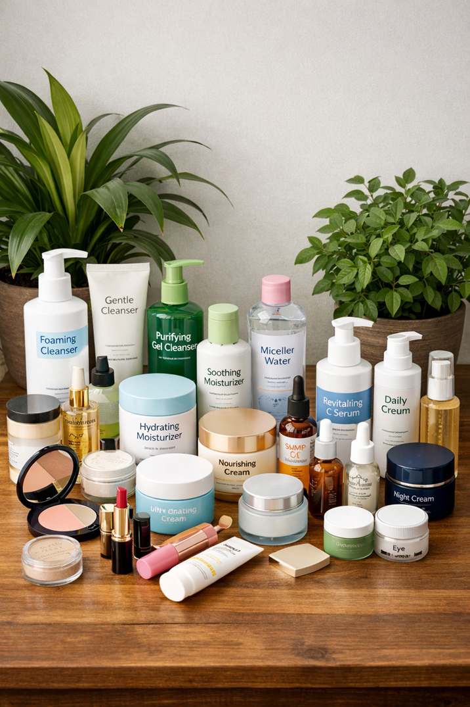

Trądzik różowaty to przewlekła choroba skóry . objawiająca się rumieniem, grudkami zapalnymi i wrażliwością skóry. Odpowiednia pielęgnacja, dieta oraz suplementacja mogą znacząco poprawić stan skóry i komfort życia.
Przykładowa grafika przedstawiająca składniki wspierające redukcję rumienia:

Tak, dieta bogata w antyoksydanty i kwasy omega-3 może zmniejszać stan zapalny skóry.
Łagodne produkty bez alkoholu i silnych detergentów, najlepiej oznaczone jako przeznaczone dla skóry wrażliwej.
Niektóre suplementy, np. z kwasami omega-3 lub witaminą B3, mogą wspierać zdrowie skóry, ale zawsze warto skonsultować z lekarzem.
Chcesz pełny poradnik krok po kroku z praktycznymi metodami pielęgnacji? Sprawdź mój poradnik:
Zobacz poradnik